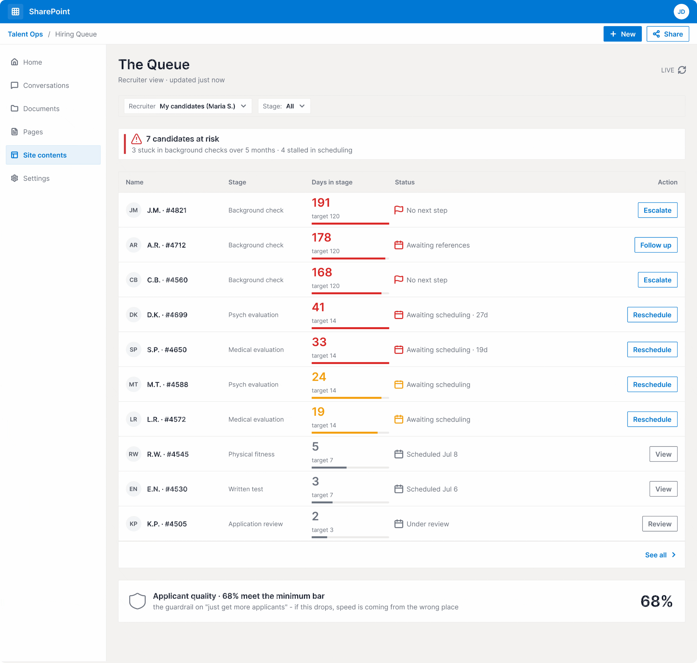
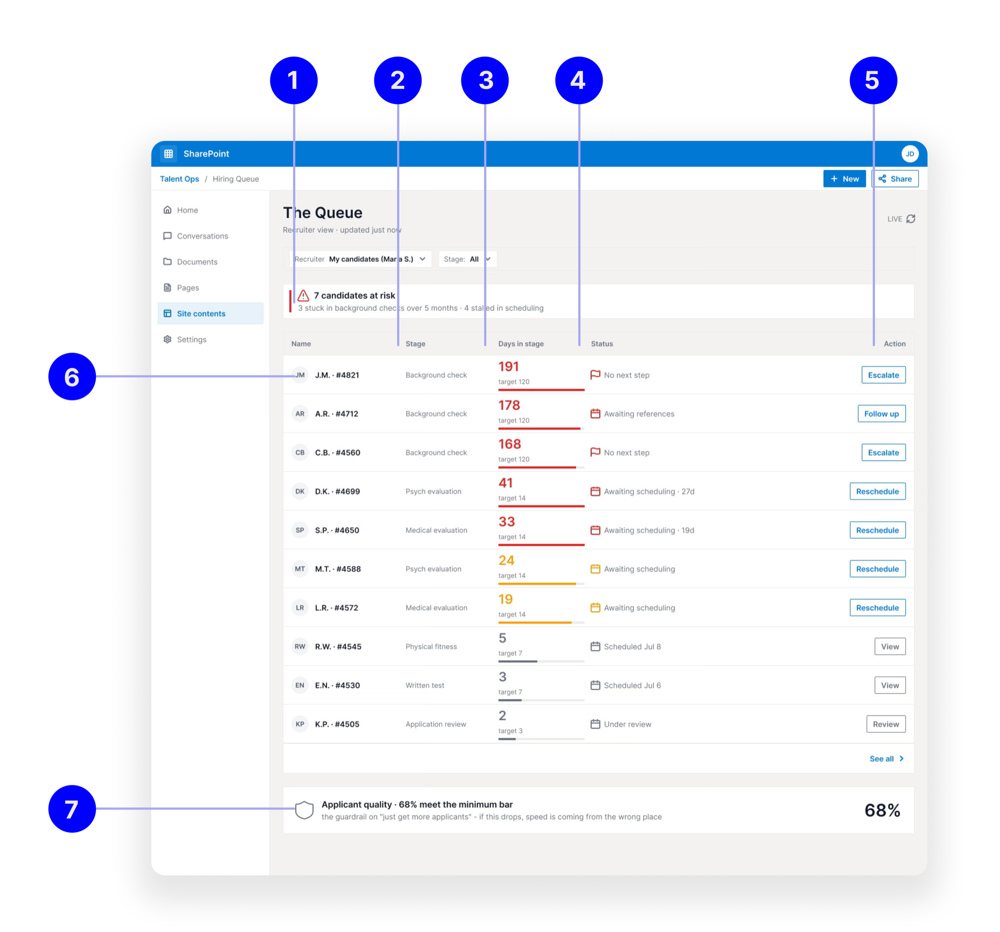

How I made a dashboard and operational improvements that helped SFPD fix a leaky hiring pipeline.
DomainPublic-sector service & product design
TimelineApril 2025 – Sept 2025
RoleSenior Service Design Lead & Project Lead
TeamCross-functional team across Mayor's Office of Innovation × SFPD × DHR
Context
A shortage the department was paying for in $60M overtime pay annually
Since 2020, the San Francisco Police Department has faced a 500-officer staffing shortage, losing more candidates annually than it hires. It used to take between 1–2 years for applicants to go from application to sworn officer. Meanwhile, the department covers the gap with overtime, increasing costs each year.
The Problem
A hiring pipeline losing strong candidates at many points
I started by asking why hiring took over two years. I interviewed in-process candidates and recently hired candidates to trace the pipeline end-to-end and identify pain points for the end user. I found candidates getting stuck or stalled at many points—with some dropping out during recruitment, scheduling, and the academy. The process lasted long enough that qualified candidates accepted other offers before it finished. To make these losses visible and enable team action, I designed a dashboard visible to each team involved in the hiring process.
User Needs
Three distinct use cases
The lack of visibility caused daily frustrations for three user groups, each with different needs.
Recruiters & background investigators
“When a candidate I own stalls beyond the expected time at a stage, I want to know right away the reason and the next step, so I can act before they accept a faster offer.”
“When I start my day, I want to see which of my candidates are most at risk, so I spend my limited time where a candidate can still be saved.”
“When a candidate falls out, I want to log the reason in one tap, so it's captured while it's fresh.”
The command lead
“When I decide where to allocate people and budget, I want the pipeline's losses ranked by impact, so I fund the biggest leak.”
“When I change the process, I want to see whether the metric moved and by how much, so I know if it worked rather than guessing.”
“When a stage is contested, I want one number everyone trusts, so the room argues about the fix.”
The mayor's team (executive / comms)
“When I have to speak publicly about the shortage, I want a few true, defensible numbers and a human story, so I can show progress.”
“When we ask for funding, I want to point to where the money actually made a difference, so the request is credible.”
“When I report a speed gain, I want the quality numbers beside it, so ‘faster’ can't be read as ‘lower standards.’”
Design Tenets
Principles for a tool people would trust and use
The tenets point to statements that will ultimately allow users to trust what they see and adopt it to make operational improvements that result in faster hiring.
01
Make the candidate experience impossible for a leader to ignore.
02
Name the bottleneck, not the person, so the truth can be acted on rather than defended.
03
Every number traceable to its source.
04
Integrate into people's existing workflows.
Design Decisions
Where it lives and how many views
Decision 1 — Where it lives
SharePoint (embedded)Chosen
In the daily path: Lives inside the workspace staff already use.
Inherits governance: Uses existing auth, permissions, and security review.
Easy handoff: No separate app to keep alive after handoff.
? A template-constrained UI limits control over hierarchy, interaction, and data freshness.
Standalone web page
Full craft control: Complete command of layout, hierarchy, and interaction.
No platform ceiling: Freedom on data freshness and chart types.
? Adds a friction step at every use and needs its own auth; sharing data to an external tool needs additional permissions, adding time and upkeep.
Decision 2 — One consolidated view vs. views by user
One consolidated dashboard
Nothing to reconcile: One screen, fewer clicks, cheapest to build.
Simple to maintain: A single page to keep current for the single data analyst working on this task.
? Too much data in one place to serve all three user needs well.
A view per user — Queue, Map, ScoreboardChosen
Right level of data for each user: Each view addresses the top three data points each user needs to take action.
Matches cadence and authority: Daily for the recruiter, weekly for the leader, monthly for the executive.
Controls who sees what: Fits a political room where naming a unit as the bottleneck is sensitive.
? Three surfaces cost more to maintain, and numbers can drift across views without disciplined definitions; more work for the staff building and maintaining this tool.
Final design
An actionable dashboard tailored for each user's need: hiring staff working with candidates, a captain or department lead in operational hiring decisions, and a mayor's staff making funding and comms decisions.
The chosen structure — a view per user — became three surfaces, each matched to a user's cadence and authority: the recruiter's daily Queue, the leader's weekly Map, and the executive's monthly Scoreboard. All three read from the same numbers, so a figure defended in the executive room traces straight back to a single candidate in the recruiter's queue.

Interactive prototype — the dashboard in motion.
The Queue: recruiter view, daily
This page supplements the SmartRecruiters app recruiters use. The dashboard integrates with internal SFPD data and shows where candidates are stuck and for how long.
Every candidate is ranked by how long they have been in a stage past the target time. Days-in-stage turns red once it exceeds the stage's target (191 compared to 120 in a background check) and amber as it nears the target. An at-risk count appears at the top. Each row has one action: Escalate, Follow up, or Reschedule. This lets spotting and acting on a stuck candidate happen in one step.
A quality check appears at the bottom of every view: applicant quality compared to the minimum standard.
The Map: leader view, weekly
This view helps the captain and commander make decisions on recruiter tooling, staffing, and resourcing across the hiring pipeline and identify where gaps persist.
The command lead's weekly view ranks stages by loss, such as candidates lost times median time lost. It reveals the biggest problem: the background check as the ‘long pole,’ with 142 stuck at a median of 168 days.
The funnel table shows pass rates are good everywhere; losses are due to time, not failure.
This shifts the fix from ‘screen harder’ to ‘clear the backlog.’ Capacity versus demand shows the resource gap: 142 cases handled by 6 investigators. The time-to-hire trend shows re-ordered evaluations reduced time from about 22 to 14 months.
The Scoreboard: executive & funder view, monthly
The executive and funder view, updated monthly, allows the mayor's office to understand high-level improvements.
A headline strip shows the few clear numbers a leader can share — time to hire down to about 14 months, applications up 64%, net hires changing from −40 to +40. ‘Closing the shortage’ predicts the 500-officer gap closing before 2029 with the fix, compared to about 2035 at the current pace; ‘Cost of the shortage’ explains it in budget terms ($60.1M per year in overtime, about $4.8M per year saved).
‘In motion this quarter’ links the spending back to the bottleneck, and a human story is shown next to the numbers to give the leaders a view of ‘faster’ as a person going through the process.
1
Candidates at risk
A banner surfaces how many of the recruiter's candidates are at risk (7), split by why — stuck in background checks over 5 months · stalled in scheduling — so the day opens on the urgent work.
2
Stage
Each candidate's current pipeline stage (background check, psych, medical, physical fitness, written test, application review), so it's clear exactly where they sit.
3
Days in stage
How long they've waited, shown against the stage's target (191 vs. target 120); the number turns red past target, amber as it approaches.
4
Status
What they're waiting on (no next step, awaiting references, awaiting scheduling) — the reason for the delay, spelled out.
5
Action
The single next step for that row (Escalate, Follow up, Reschedule, View, Review) — one click, not a task to remember.
6
Names, ranked by risk
Every candidate the recruiter owns, most at-risk on top, so limited time goes where a candidate can still be saved.
7
Applicant quality
A guardrail at the foot of the view (68% meet the minimum bar), so ‘just move faster’ can't quietly lower standards.

The Queue, annotated — the seven features that make a stalled candidate visible and actionable.
The Crucial Decision
Dashboard enabled continuous data-driven improvement to fix hiring issues
The crucial decision this dashboard enabled was whether the department and the mayor's office should allocate $900,000 for advertising to address a 500-officer shortfall. As the project lead, I found time to test advertising while creating this dashboard, which shows delays in hiring and candidate experience, proving that additional funds for top-of-funnel fixes won't address the shortage.
The existing sequential hiring process—starting with a written test, then an oral interview, followed by a physical exam, background checks taking six months, and medical and psychological evaluations—was too slow. The decision was whether to invest $900,000 in expanding advertising or resequence the pipeline to help existing candidates reach the academy faster. Investing in advertising for a two-year pipeline costs more with similar losses.
The dashboard enabled all stakeholders to continue making operational fixes and evaluating them against hiring gains. Resequencing evaluations to run concurrently, speeding background checks, and rearranging steps targeted the core issue: time. Using the dashboard, I supported this approach with evidence, enabling us to prioritize solutions and monitor progress.
Why a Dashboard, Not a Memo
A memo gets read once; the cost had to stay on screen
The two-year wait was culturally seen as an endurance test. The common view I heard was that a candidate who really wanted the job would be willing to wait, and that the wait itself showed commitment.
To effectively challenge this belief, I needed to clearly show the true cost of a slow process for the system, so department leaders could stop seeing the failing system as something they want.
If we don't hire faster, we will take over 10 years to close the staffing gap.
The dashboard showed that we were losing qualified candidates to faster offers elsewhere, costing us more than the candidates themselves. When the cost was continuously shown and shared, it became impossible to ignore, and because the situation kept changing, leaders needed to see it again and again, not just once. So the tool had to be a constantly updated, continuously used resource that enables the department to make data-driven decisions.
Impact
Measuring adoption, decisions, and speed
I tested the dashboard's impact by measuring adoption, decisions, and metrics. The strongest signals were usage frequency, shifts in decision timing, and changes in hire review timing after exposure. The causal link was narrower than just “hires rose”: background was key, so I measured background time before and after. The team made background-related changes, such as updating tools, upstaffing, and tracking speeds for stronger candidates, all via the dashboard.
+40net-positive sworn officers by the end of 2025 — the first net-positive police hiring since before the pandemic
6 mo → 2 moaverage background-check time
1 yr → 4 molateral candidate hiring process
Service design improvements
Operational fixes the dashboard surfaced
The dashboard enabled many operational improvements, helping achieve net-positive hires for the first time in 6 years.
Some of the operational improvements and service design changes include creating:
A “One-Stop-Shop” for the first three hiring steps, including the written test, oral interview, and physical test. The department combined steps to help candidates save time and get results asap.
I created a method to green-light strong candidates early, using additional questions in oral interviews to identify crucial traits and determine if the candidate is a strong fit for SFPD. Once identified, they were put on a fast-track path to get preference for appointments, next steps, and 1-1 white-glove recruiter support to keep moving forward.
The dashboard revealed delays in medical appointments for candidates and enabled the SFPD, HR, and Public Health Departments to add more medical check appointments.
We added more recruiters to provide white-glove support for strong candidates and brought in more civilian police officers to expedite background checks.
We tested methods to use AI to generate candidate summaries after successful background checks, a process that officers previously took several days to complete. We created prompts and guardrails to help officers use the right tools.
Learnings
Culture change and data-driven decision making
01
Visibility, rather than effort, was the real challenge here. The most impactful thing I did was demonstrate that a problem existed before anyone invested money in decisions.
02
Bringing data together from different departments can seem bureaucratic and takes a lot of effort and energy. It's important to frame numbers carefully, as how you present a figure influences whether people act on it.
03
Presenting the same finding as a neutral system fact, rather than an accusation, helped move forward with a fix that might have stalled if blame were involved.
04
For those unfamiliar with using metrics, having clear, concise, and actionable data is essential for integrating it smoothly into their workflow. For instance, I turned the Mayor's communications office dashboard into an automated monthly email update. Similarly, I helped the Mayor's communications team update the SFPD leadership's email with clear guardrails for easy access.
05
The Mayor's team always had questions—more than just data—and decision-makers needed a monthly check-in to better understand the changes.